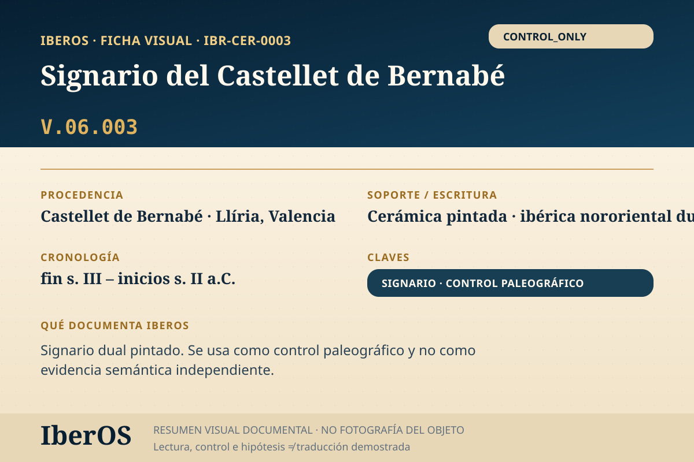

Ficha indexable · IBR-CER-0003
Signario del Castellet de Bernabé
Signario dual pintado; dualidades en oclusivas, vocales y continuas. No alime...

Qué documenta IberOS
Signario dual pintado; dualidades en oclusivas, vocales y continuas. No alime...
Este objeto se publica como Control paleográfico / metodológico. No debe contarse como evidencia semántica independiente del corpus principal.
Cautela científica: una transliteración, segmentación o semejanza formal no equivale a una traducción demostrada de la lengua ibérica. IberOS mantiene separadas evidencia, interpretación, control y predicción.
Trazabilidad metodológica
Módulos activos: PALEO · TRACE · SIGNARY_DETECT · DUAL_LOCK.
Dependencia: INDEPENDENT_OR_UNRESOLVED.
Estado de entrada: ONE_OR_FEW_ENTRIES.
Fuente y bibliografía de referencia
Fuente principal registrada: https://doi.org/10.36707/palaeohispanica.v0i13.175
Archivo de trabajo IberOS: IberOS_CaseStudies_Control_IBR-CER-0003_CastelletBernabe_Signario_v1.0.pdf.